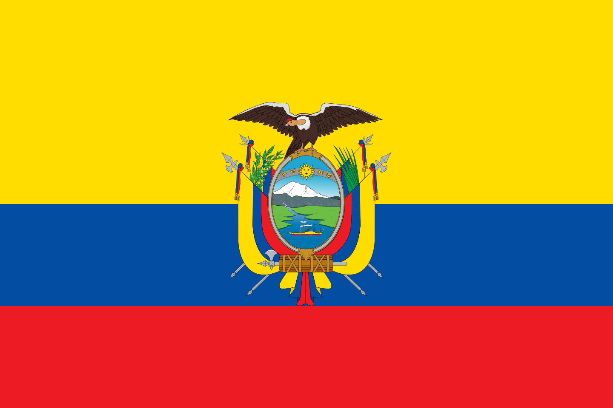
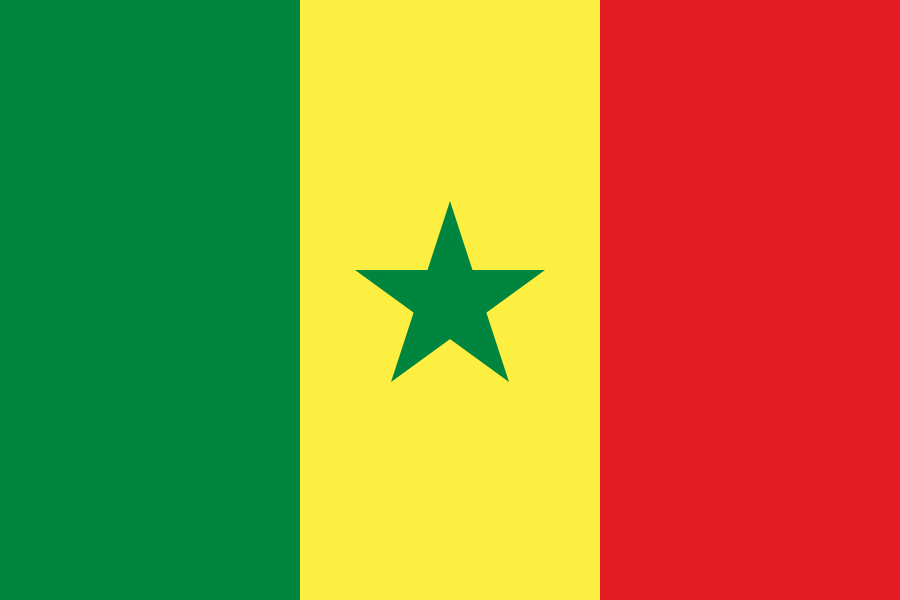
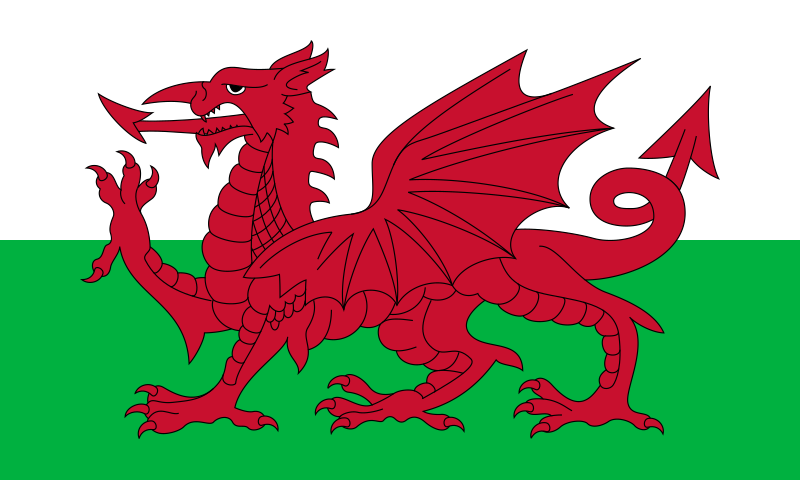

Qatar
Qatar Inglaterra
Inglaterra Argentina
Argentina Francia
Francia Irán
Irán Arabia Saudita
Arabia Saudita Australia
Australia Estados Unidos
Estados Unidos México
México Dinamarca
Dinamarca Paises Bajos
Paises Bajos Polonia
Polonia| GRUPO A | GRUPO B | GRUPO C | GRUPO D |
|---|---|---|---|
| Qatar |
Inglaterra |
Argentina |
Francia |
|  Ecuador | Irán |
Arabia Saudita |
Australia |
|  Senegal | Estados Unidos |
México |
Dinamarca |
| Paises Bajos |
 Gales | Polonia |
Túnez |
| GRUPO E | GRUPO F | GRUPO G | GRUPO H |
|---|---|---|---|
 España España |
 Belgica Belgica |
 Brasil Brasil |
 Portugal Portugal |
 Costa rica Costa rica |
 Canada Canada |
 Serbia Serbia |
Ghana |
 Alemania Alemania |
Marruecos |  Suiza Suiza |
Uruguay |
 Japon Japon |
Croacia | Camerun |  Corea del sur Corea del sur |